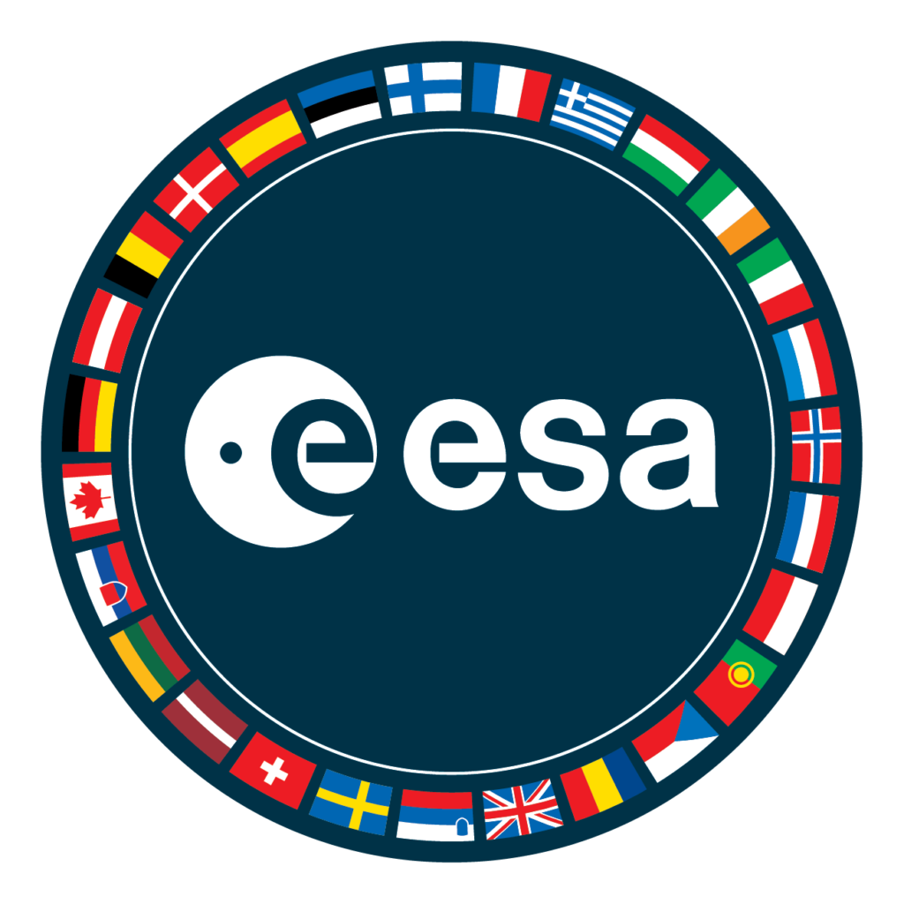
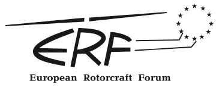

About
About
I bridge the gap between theoretical aerospace engineering and hands-on technical execution. My academic and professional journey is deeply international, having trained at leading institutions across Europe—from my foundational degrees at the Universidad de Sevilla in Spain [cite: 11, 15] to my Master's studies at Politecnico di Milano in Italy [cite: 8], along with specialized space programs with ESA and Ariane Cities in the Netherlands and France[cite: 50, 59].
My technical background is rooted in rigorous experimental research, including conducting wind tunnel testing to characterize electric motor efficiency for eVTOL aircraft[cite: 65]. This research allowed me to share my findings on international stages, presenting at the 51st European Rotorcraft Forum in Italy and representing my university at the PEGASUS Student Conference[cite: 18].
Today, I apply these analytical and AIT methodologies to push the boundaries of space technology. Whether I am developing navigation algorithms for autonomous rovers [cite: 57] or building cubesat shock test stands, I thrive in dynamic, cross-border environments where I can drive innovation in aerospace technology.
Professional Experience

Intern in Technology Department
European Space Agency · May - Present
- Work as an AIT engineer in the development of a cubesat shock test stand.
Intern at the Department of Aerospace Engineering
Universidad de Sevilla, Sevilla · Dec 1, 2022 - Jun 30, 2023 [cite: 132]
- Research for my Bachelor's Final Thesis within propulsive studies[cite: 133].
- Wind tunnel testing for the characterization of electric motors efficiency for the development of eVTOL convertible aircraft[cite: 133].
Summer Engineering Internship at Spanish Air Force
MAESE, Seville, Spain · 2022 [cite: 89, 90, 95]
- Study and analysis of maintenance control of aeronautical parts from Spanish Air Force[cite: 91].
- McDonell Douglas F-18 Hornet: analysis of maintenance records of parts from the pneumatic system[cite: 94].
- CASA CN-295: creation of maintenance and repair instructions of the main landing gear[cite: 96].
- CASA CN-235: design in CATIA V5 of an accessory for the propeller hub to be mounted onto its test fixture[cite: 97].
Academic background
Master of Science in Space Engineering
Politecnico di Milano, Milan, Italy · 2023-2026 (expected) [cite: 74, 75, 76]
- Key Modules: Space Propulsion, Combustion in Thermochemical Propulsion, Spacecraft Guidance and Navigation, Spacecraft Attitude Dynamics, Space Systems Simulation[cite: 77].
Master of Science in Aeronautical Engineering
Universidad de Sevilla, Seville, Spain · 2023-2026 (expected) [cite: 78, 79, 80]
- Key Modules: Helicopters, Turbomachinery Design, Spacecraft Systems, Flight Dynamics, Aeroelasticity, Composite Materials, Computational Fluid Dynamics[cite: 81].
Bachelor of Science in Aerospace Engineering
Universidad de Sevilla, Seville, Spain · 2019-2023 [cite: 82, 83, 84]
- Final Thesis: "Comparative analysis of performances of different motor-propeller combinations for the characterization of electric motors efficiency"[cite: 85].
- Key Modules: Orbital Mechanics, Flight Mechanics, Fundamentals of Propulsion, Structures, Advanced Aerodynamics, CAD/CAM[cite: 87].
Awards & Conferences
Best Bachelor's Thesis on an aerospace topic
AIRBUS GROUP Aerospace Chair, Seville, Spain · Oct 16, 2024 [cite: 100, 101, 102]
- Award to the Best Bachelor's Thesis on an aerospace topic defended between 2019 and 2023 at ETSI[cite: 103].

51st European Rotorcraft Forum
Venice, Italy · Sept 9-12, 2025 [cite: 106, 107, 108]
- Presented the characterization of electric motors efficiency for the development for eVTOL convertible aircraft[cite: 109].
20th PEGASUS Student Conference
Universitat Politècnica de Catalunya, Spain · Apr 26-27, 2024 [cite: 111, 112, 113]
- Student representative of the University of Seville, in its contributions to the PEGASUS European network[cite: 114].
Involvement
Participant in the 2nd Electric Propulsion Summer School
ESTEC, Noordwijk, Netherlands · Apr 1-3, 2025 [cite: 117, 118, 119]
- Lectures on electric propulsion fundamentals, technologies, simulations, and mission applications[cite: 120].
Participant in the ESA Academy's Robotics Workshop
ESTEC, Noordwijk, Netherlands · Oct 29-Nov 1, 2024 [cite: 122, 123, 124]
- Worked developing navigation algorithms and machine learning models applied to an ExoMy Rover[cite: 125].
Participant in the 22nd CVA Summer School
Vernon, Normandie, France · Jul 2-22, 2023 [cite: 126, 127, 128]
- Based in space transportation and targeted at university students and young engineers from the aerospace industry[cite: 130].
Contact
Open to conversations about space technology, engineering research, and professional collaborations.